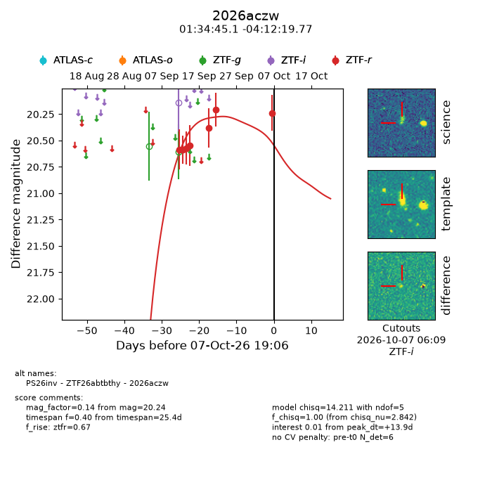
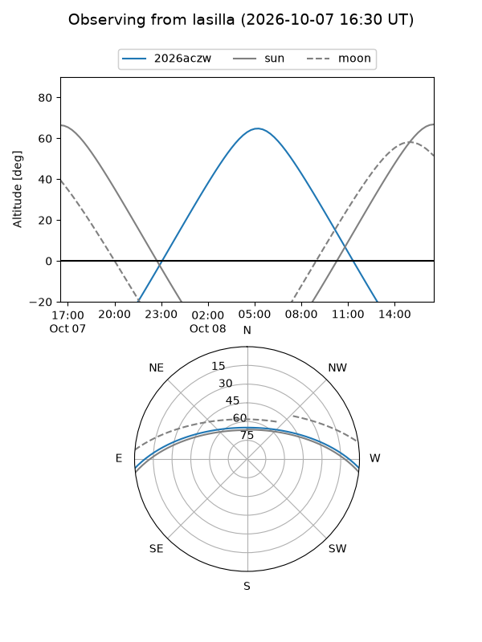
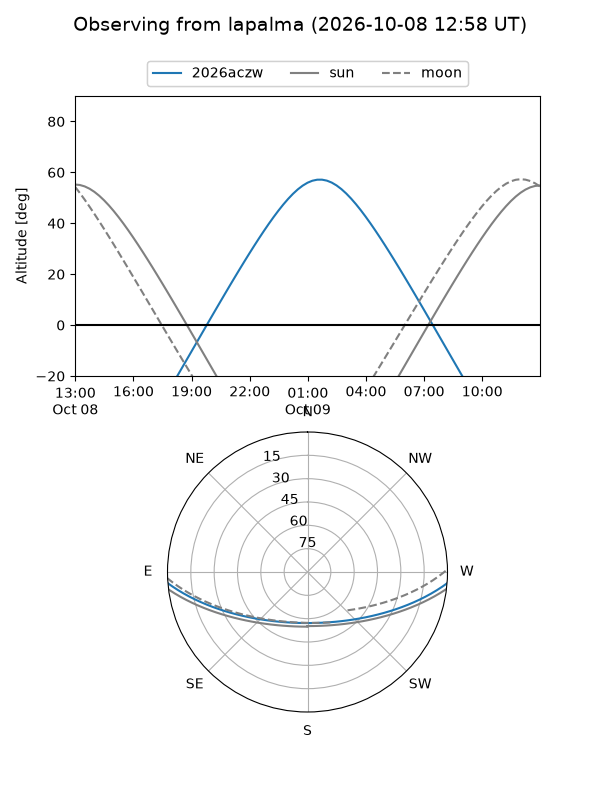
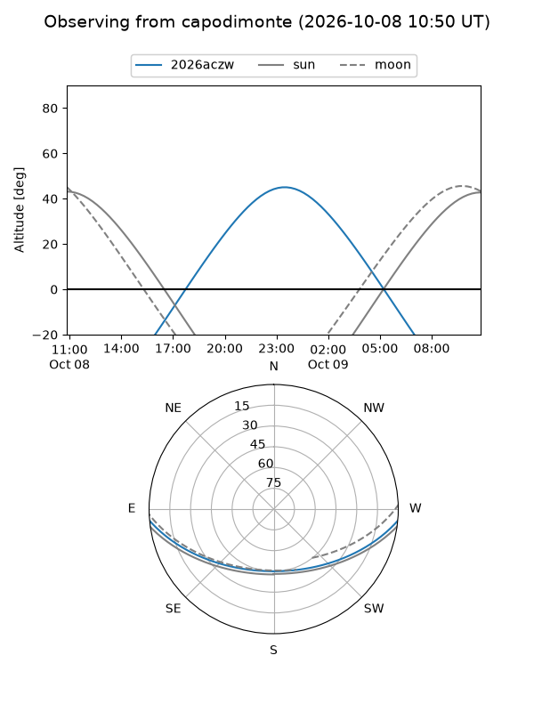
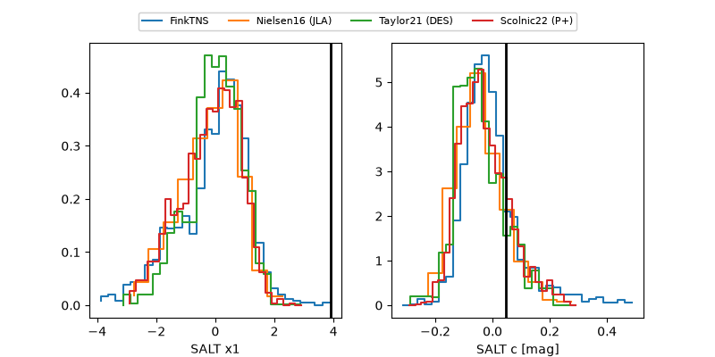

2026aczw
Target 2026aczw at 2026-10-08 07:09
Aliases and brokers:
FINK-ZTF: ztf.fink-portal.org/ZTF26abtbthy
Lasair-ZTF: lasair-ztf.lsst.ac.uk/objects/ZTF26abtbthy
ALeRCE-ZTF: alerce.online/object/ZTF26abtbthy
YSE-PZ: ziggy.ucolick.org/yse/transient_detail/2026aczw
TNS name: wis-tns.org/object/2026aczw
Direct TNS query: direct search
alt names
ZTF26abtbthy (ztf,fink_ztf)
2026aczw (tns,yse)
PS26inv (panstarrs)
Coordinates:
equatorial (ra, dec) = 23.6878,-4.20549
equatorial (HMS+DMS) = 01:34:45.06,-04:12:19.77
galactic (l, b) = (149.0946,-64.85386)
Flags:
TNS type: nan
peak dt: +14.4
Photometry:
last ztfr=20.24
7 ztfr detections
Lightcurve

Visibility



Additional plots
